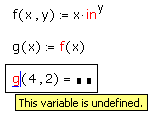

Tracing Errors |
When a worksheet contains an expression that is dependent on one or more definitions made earlier in the worksheet, an error in that expression may originate in an earlier definition. Look at the example below:

The error appears in g(4,2). However, g(4,2) is based on the definition of f(x,y). In this case, inches cannot be raised to a variable power, so f(x,y) is undefined, causing an error to appear.
Although the source of the error may be clear, in more complicated worksheets or in programs with repeated calculations, the source of the error may not be easy to find. Error-tracing detects the original source of an error. To trace an error:
Right-click on the region showing the error and choose Trace Error from the menu. Or click in the region and choose Trace Error from the Tools menu. The Trace Error dialog box appears.
Use the buttons in the dialog box to navigate among the regions associated with the region showing the error.
Previous: Steps back to the previous region involved in the error.
Next: Steps forward to the next region involved in the error.
First: Goes back to the first region involved in the error.
Last: Goes forward to the last region involved in the error (the region displaying the error message).
Close: Closes the dialog box.